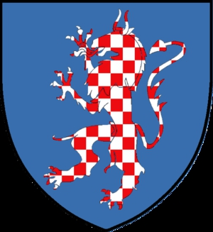

Antavla
31937693 Ingeborg Andersdotter (Panter)
Blev ca 45 år.

Far:
Anders Nielsen (Panter) (1355? - <1406)
Mor:
Ide Lydersdatter Holck af Asdal (1375? - >1426)
Född:
omkring 1371 Löddeköpinge (M).
Död:
före 1417.
Barn med
31937692 Stig Aagesdatter Thott til Naes (1351? - 1417)
Barn:
Anders Stigsen Thott til Naes (<1417 - 1496)
Personhistoria
Årtal
Ålder
Händelse
1371?
Födelse omkring 1371 Löddeköpinge (M)
<1417
Död före 1417